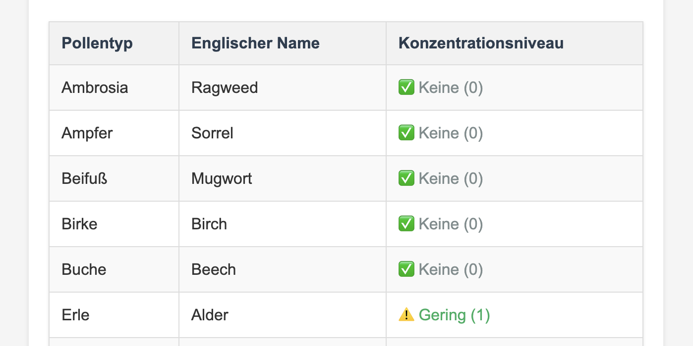

Pollen Alert
Germany
Multilingual pollen forecasts and notifications for Germany.
Project overview
A forecast delivered by email
Pollen Alert Germany turns WetterOnline pollen forecasts into readable email alerts for a configurable German city. Berlin is the default when no city is supplied.
The scheduled workflow prepares the forecast in English, German, or Chinese and sends it by email, so recipients can check the daily report without repeatedly opening the forecast page. It presents forecast information; it does not diagnose allergies or provide medical advice.
Information flow
From public forecast to inbox
GitHub Actions schedules the Python job. It retrieves and parses the forecast, normalizes each pollen concentration, then sends the rendered email through the configured SMTP server.
Implementation
A small scheduled Python job
The scraper uses requests to retrieve the WetterOnline page and BeautifulSoup to parse its forecast. The target city is configurable through CITY_NAME, with Berlin as the default. Concentrations are mapped to four levels: 0 none, 1 low, 2 medium, and 3 high.
GitHub Actions provides the scheduled run, documented for 07:00 UTC each day once the workflow is enabled. Email settings are supplied through environment variables and GitHub Secrets; SMTP handles delivery, while the generated HTML supports English, German, and Chinese labels.
Email report
What the forecast contains
The selected city and the forecast date identify the report.
The report lists pollen types with a normalized concentration from 0 to 3.
HTML email templates present the forecast in English, German, or Chinese.
A configured SMTP account sends the report when the GitHub Actions workflow runs.
Email preview
A readable forecast table
